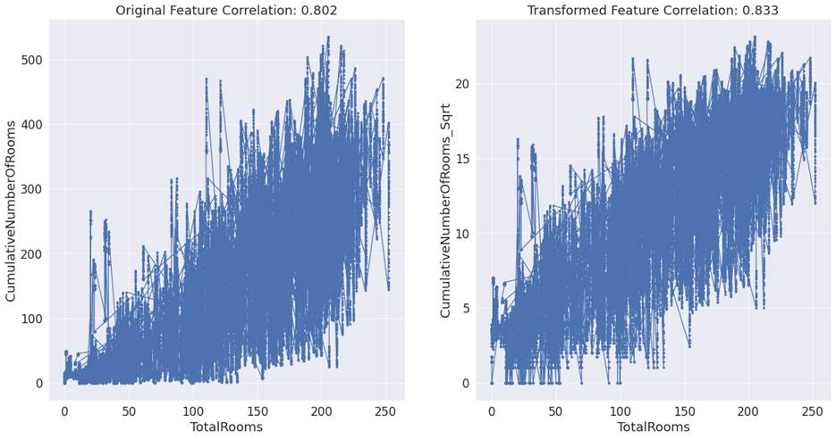
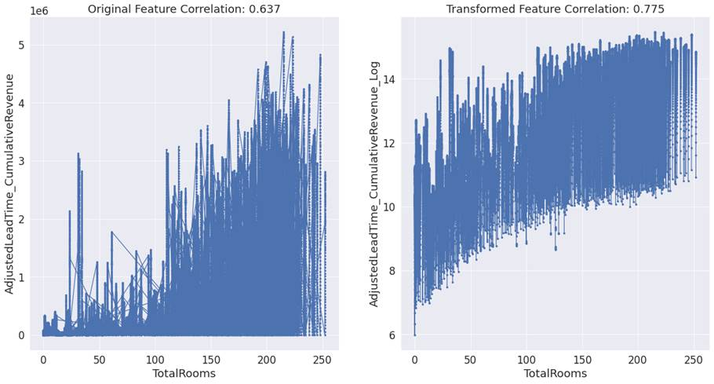

4.3: Engineering Numerical Features
Values of a continuous or numeric
feature exist within a range of lower and higher points. It can have unlimited
values between the lowest and highest points. Some examples are prices,
distance, weight, height, etc. Most of the higher order feature engineering for
numerical features are transformations and are useful for linear models. Linear
models expect the relationship between the feature and dependent variable as
linear and residuals to have homoscedasticity. If this is not met,
transformations can help.
For classification problems, we can
select all higher order numerical features, for whom F-test is significant. In
the case of numerical features, for regression problems, we can rank the
transformed features based on correlation with the dependent variable. We can
select the higher order feature which has the highest correlation with the
dependent variable. In some cases, we can also discuss why a certain higher
order feature has a higher correlation than others by looking at the data
distribution in the original feature. This principle is applicable for all types
of higher order features, except for Binning , as it produces a categorical
feature.
4.3.1 Binning
It is the process of creating a
categorical feature from a numerical feature. We can for example use quartiles
0-25 percentile, 25-50 percentile, 50-75 percentile, and 75th
percentile-maximum for creating bins. If a value in the original numeric
feature falls under a specific quartile, we can code the value amongst the 4
quartiles in the categorical feature. Similarly, we can also divide the data
into percentile bins and code the categorical values. Binning helps in finding
definite structure in numerical features, at the cost of removing nuances.
4.3.2 Square and Cube
Square and the cube of the original
feature are polynomials. It is helpful to use polynomial features if the
feature follows an inverted-U pattern. An inverted-U pattern exists when the
dependent variable increases concerning an increase in the independent variable
at lower values. However, at higher values of the independent variable, the
dependent variable increases at decreasing rate. An example can be wage, as
against age. When age increases, wage also increases. After a certain age, the
wage doesn't increase and instead decreases. In other words, when the
relationship between the feature and the dependent variable is not linear or
when the relationship is curvilinear or quadratic, we can use polynomial
features. Polynomial features are used mostly as square. Sometimes, a higher
order polynomial such as a cube can also be used.
4.3.3 Regression
Splines
If we are using a linear model and
the evidence suggests that the relationship is nonlinear, it's better to
replace the linear model with a polynomial model. However, if the number of
polynomial features keeps increasing, it can lead to overfitting. In this type
of situation, we can instead use regression splines. It divides data into
multiple regions, known as bins, and fits linear or low-degree polynomial
models for each bin. Points at which data are separated as bins are called
knots. It usually uses a cubic polynomial function, within each region. Using a
very high number of knots overfits the model. We should try a different number
of knots to identify which one produces the best results.
4.3.4 Square Root and
Cube Root
Square root and cube root
transformation can help normalize a skewed distribution. It does so by
compressing higher values and inflating lower values, resulting in lower values
becoming more spread out. This is especially true when the feature has count data
and follows a Poisson distribution. Square and cube root transformation could
be much closer to gaussian. It can convert a non-linear relationship between 2
variables into a linear relationship. However, we should be careful when
applying square root and cube root transformation on features that have
negative values. Square root and cube root of negative values are returned as
missing values.
For the feature 'CumulativeNumberOfRooms'
in the hotel booking demand dataset, the correlation of the original feature
with total rooms was 0.80. After square root transformation, it marginally
improved to 0.83. The effect of the transformation can be understood better
with the help of figure 4.3.4 below.

Figure 4.3.4: Scatter plot of TotalRooms with CumulativeNumberOfRooms
and the square root of CumulativeNumberOfRooms.
We can infer from the straight line
like structure in the second plot that after square root transformation, the
feature has a nearly linear relationship with the dependent variable.
4.3.5 Log Transformation
If the feature or the dependent
variable has an outlier, log transformation can help subdue the effect of such
observations. Just like square root and cube root, log transformation can
compress higher values. It does so more aggressively than square root and cube
root. This in turn can help models which are sensitive to outliers. For
example, linear regression can help achieve normality.
It can also help in converting a
non-linear model into a linear model. For models which study the effect of
percentage change in the feature on the percentage change in the dependent
variable, performing log transformation before modeling can result in a linear
model.
Let's consider the feature AdjustedLeadTime_CumulativeRevenue in the hotel room
booking dataset. This is an interaction effect feature and a product of AdjustedLeadTime and CumulativeRevenue.
Values in this feature are very high. Log transformation was able to subdue the
higher values, and as a result correlation for the feature with the dependent
variable 'TotalRooms' increased from 0.637 to 0.775.
We can also infer from plot 4.3.5
that the log-transformed feature has a nearly linear relationship with the
dependent variable.

Figure 4.3.5: Scatter plot of TotalRooms with AdjustedLeadTime_CumulativeRevenue
and log of AdjustedLeadTime_CumulativeRevenue.
4.3.6 Standardization
and Normalization
Linear models use gradient descent
for converging. For gradient descent, it helps if all the features are on the
same scale. If the features are not in the same scale, we can take use 2
methods to convert features in different scale of measurement, into same scale
of measurement. These two methods are called as scaling and standardization.
Scaling is also known as normalization, and standardization, is otherwise known
as Z-score.
Normalization transforms all the
values in features in the range of 0, and 1. It does so while preserving the
shape of data distribution.
Unlike normalization,
standardization retains useful information about outliers. For a standardized feature,
its mean value becomes 0 and the standard deviation becomes 1, and hence
follows a normal distribution. standardization is more applicable in linear
algorithms. It is sensitive to outliers and outliers should be treated first,
before proceeding with this method.
4.3.7 Box-cox
Transformation
4.3.8 Yeo-Johnson
Transformation
Yeo-Johnson technique helps convert
skewed data into Gaussian distribution. It can handle zero and negative values,
unlike the box-cox transformation.

Figure 4.3.8: Scatter plot of TotalRooms with CumulativeRevenue_Substract
and yeo-johnson transformation of CumulativeRevenue_Substract.
Let's consider the feature CumulativeRevenue_Substract in the hotel room booking dataset. Yeo-Johnson
transformation was able to change the relationship between the feature and
dependent variable. As a result of the transformation, the correlation for the
feature with the dependent variable 'TotalRooms'
increased from 0.625 to 0.752.
We can also infer from plot 4.3.8
that the transformed feature has a nearly linear relationship with the
dependent variable.